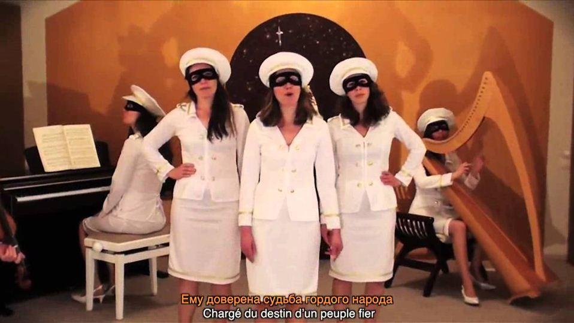

Créé durant l’été 2014, le groupe musical féminin « Les Brigandes » est diffusé par le site internet « Le Comité de Salut Public ». Ce groupe de sept femmes alliant la douceur des mélodies et l’originalité des clips avec des paroles incisives et dérangeantes fît rapidement un « buzz » sur les réseaux sociaux de la mouvance non-conformiste.
Néanmoins, depuis quelques mois une campagne de dénigrement initiée par une « antifa », formée idéologiquement au sein des Jeunesses communistes révolutionnaires, a été amplifiée par le site gauchiste La Horde, et reprise par l'hebdomadaire mondialiste Le Point, contre Les Brigandes.
Il est regrettable que les accusations de la presse euroatlantiste aient été reprises par certains sites patriotes et catholiques afin de présenter ces jeunes femmes comme membre d’une secte. Cela montre bien que chacun peut se laisser abuser, y compris les journalistes de la presse libre.
« Sans Frontières » a préféré découvrir par lui-même pour savoir qui étaient vraiment ces jeunes chanteuses non-conformistes et les présenter à nos lecteurs.
Elena Sydorova : Quel est le but des « Brigandes » ?
Les Brigandes : Comme cela est indiqué sur notre site web (www.lecomitedesalutpublic.com), notre but est de « produire et diffuser des œuvres culturelles, artistiques et intellectuelles pour servir le combat antimondialiste ».
C’est dans cette optique que nous nous concentrons sur trois activités principales :
Le combat culturel, avec les Brigandes qui produisent des clips musicaux et des CDs (disponibles sur la boutique de notre site). Nous avons sorti deux albums pour le moment : « Le Grand Remplacement » en octobre 2015, et « France notre Terre » en juin 2016.
Les émissions « Radio Brigandes », qui expliquent notre démarche et synthétisent des informations venant de différents courants antimondialistes. Ces émissions ont pour but d’encourager l’alliance antimondialiste et de donner la parole à des spécialistes et des représentants de différents mouvements dissidents, sans sectarisme.
L’édition de brochures pour approfondir certains sujets.
E.S. : Vous dénoncez dans vos chansons les effets pervers du mondialisme. Est-ce votre ligne politique ?
L.B. : Notre ligne politique est assez simple : nous sommes pour la défense de la diversité de la nature, des nations et des cultures contre le mondialisme uniformisateur. Nous dénonçons ainsi en chanson l’élite mondialiste de notre pays (Bing Bang Bong – Chiens de politicards) ou le fer de lance du mondialisme qu’est l’américanisation (Comment on devient américain). Toujours dans cette optique de dénoncer les agents du mondialisme, nous avons dénoncé la Franc-Maçonnerie (La loge des Jacobins) ou encore la politique visant à écraser l’Europe par un remplacement de population avec l’immigration massive (Le Grand Remplacement).
Mais nos chansons ne se cantonnent pas qu’à la dénonciation : elles mettent aussi en valeur des modèles de résistance et de noblesse face à la subversion moderne. L’héroïne française Jeanne d’Arc est mise à l’honneur (Jeanne – J’ai trouvé une épée), ainsi que l’ensemble des héros de l’humanité (Le retour des héros) ou encore la France dans son ensemble (France notre Terre). Conscients que le mondialisme est principalement incarné par les États-Unis d’Amérique, nous soutenons les nations qui s’opposent à l’impérialisme américain. Nous avons donc exprimé notre soutien à la Russie de Vladimir Poutine dans Laissez vivre la Russie – Не мешайте жить России.
« Quel est cet homme sorti de l’hiver
Chargé du destin d’un peuple fier
De la France recevez notre estime
Cher Vladimir Poutine »
Les Brigandes – Laissez vivre la Russie – Не мешайте жить России
E.S. : Vous semblez admirer la Russie. Vous sentez-vous proche de Vladimir Poutine ?
L.B. : La Russie s’est en effet relevée de la période communiste de façon exemplaire, grâce à la force et l’audace de Vladimir Poutine. On peut dire que la Russie est aujourd’hui le dernier grand bastion chrétien contre la décadence, ce qui lui vaut d’être diabolisée dans les médias occidentaux. Elle donne l’exemple d’une nation qui tente de retrouver son indépendance et son identité, et qui montre en de nombreux points qu’elle refuse la politique occidentale : limitation sévère de l’immigration, combat contre l’islamisme, interdiction du mariage homosexuel et de toute propagande homosexuelle ou pornographique sur les mineurs, interdiction de l’agriculture OGM sur le territoire russe, opposition à l’interventionnisme américain, limitation du libéralisme effréné, etc.
Au niveau spirituel, nous nous sentons d’ailleurs plus proches de l’Orthodoxie que du Catholicisme, l’Orthodoxie étant par nature moins disposée au mondialisme (les églises ne sont pas centralisées) et plus tolérante (reconnaît que l’Esprit Saint peut agir en dehors des religions chrétiennes). De toute façon, il suffit de comparer le Pape François au Patriarche Kyrill : l’un prône l’immigration comme un devoir sacré et travaille à liquider sa propre Église dans un œcuménisme mondial, l’autre prône la guerre sainte contre l’Islam terroriste dans son discours du 9 mai dernier.
Dans une perspective de rapprochement avec la Russie, trois personnes de notre groupe apprennent le russe depuis un an : la Brigande Roxane, danseuse, harpiste et guitariste, Antoine, notre documentaliste et secrétaire, et Ruedi, le responsable de l’éclairage des clips et des aspects administratifs et juridiques du groupe.
Nous avons d’ailleurs le projet de dédier une de nos émissions « Radio Brigandes » à la Russie de Poutine. Nous avons pour cela interviewé et filmé un ex-militaire français se rendant régulièrement en Russie et ayant collaboré à plusieurs reprises avec SputnikNews (M. Pierre Malinowski), et attendons d’autres occasions d’interviews (si possible de Russes) pour compléter notre émission. Affaire à suivre…
E.S. : Vous avez choisi de vivre en communauté en cohérence avec vos valeurs, est-ce pour cela que l’on tente de vous faire passer pour une secte ?
L.B. : Oui, sans doute. Ne partageant pas les valeurs mondialistes et matérialistes du monde actuel, notre équipe a décidé de se rassembler en « clan » pour vivre en cohérence avec ses idées. Nous vivons tous dans la même zone géographique et, en dehors du travail des Brigandes et du Comité de Salut Public, nous nous entraidons aussi pour les tâches matérielles quotidiennes. Nous pensons que le grand défi de notre époque est de vaincre l’individualisme, fondement de notre société marchande, et de retrouver un mode de vie fraternel et solidaire, un « communisme communautaire » si on veut. Nous pensons que dans des pays comme la France, les personnes étant encore attachées à la conscience, à l’ordre naturel et à leurs racines vont devoir se regrouper en microsociétés, pour développer un autre système social et culturel que le modèle républicain qui nous est imposé.
Nous formons ainsi un petit clan d’une dizaine de familles, dans les forêts de la Montagne Noire dans le sud de la France.
E.S. : Vous appelez à l’Alliance antimondialiste, que préconisez-vous ?
L.B. : On pourrait résumer notre ligne de communication par :
Dénoncer les forces mondialistes,
2) Encourager les forces antimondialistes.
C’est dans cette optique que nous nous sommes ouverts à tous les courants s’opposant au mondialisme, peu importe leur idéologie et leurs croyances, et que nous pensons qu’il faut œuvrer à développer une alliance ou au moins une entente entre ces forces. Une résistance face à un ennemi commun qui nous menace d’extinction ne s’occupe pas des convictions de chaque camp qui y participe. Il s’agit d’une question de survie : c’est ainsi que la résistance française, entre 1940 et 1945, rassembla aussi bien des communistes internationalistes que des nationalistes français.
Nous tenons donc à affirmer la position inverse, qui est d’oublier le sectarisme et d’encourager tous ceux qui s’opposent au mondialisme uniformisateur à collaborer ensemble. Voilà pourquoi nous rassemblons les gens par la chanson et montrons par nos émissions « Radio Brigandes » que l’on peut réfléchir avec différentes personnes qui ne pensent pas forcément la même chose !
Comme nous le disons dans Le retour des héros, nous pensons que si les grands héros de l’humanité devaient revenir aujourd’hui, ils se retrouveraient tous dans le même camp : celui de la résistance face à l’Ordre Mondial.
Partager cette page